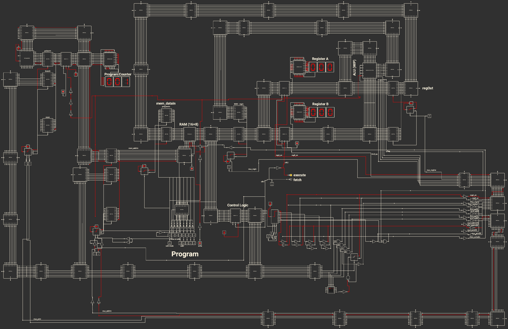

Key: control signals clock signal flag signal
This is a passion project that I worked on during the summer of 2022. Before my summer break, I took a class on digital logic and wanted to see how much I can expand upon this knowledge. It was meant to be part of a bigger project, which was to build a 16-bit computer in Minecraft.
I've build (in a simulation) a 8-bit, single-cycle computer.
I used Logic Circuit Simulator Pro on my phone to design and test, during my trip in France.
I admit that this enviroment was very difficult to work in.
One obvious downside was that this app did not have multi-bit support... so I had to connect everything one by one.
Here is the image exported view of the project:

As you can imagine, it was incredibly cumbersome to work on this on a mobile phone.
A lot of the work was done connecting the components, rather than designing and testing.
I'd imagine that above image was quite confusing.
So here is a high level diagram of the whole architecture.
Key:
control signals
clock signal
flag signal
condBranch works.
The ALU component is a sequencial module in my design.
It contains a flag register that updates depending on the results of some compare instruction.